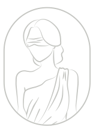
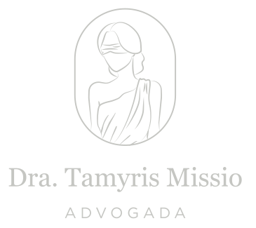

Negativa de Convênio e Plano de Saúde
Atuação diante de negativas injustificadas de cobertura de tratamentos, exames, internações e procedimentos pelos planos de saúde.

Dra. Tamyris MissioADVOGADADIREITO DA SAÚDE E DEFESA DO PACIENTE
Garantindo o seu acesso a tratamentos, cirurgias e medicamentos quando a cobertura é negada.
Atuação jurídica focada em soluções para negativas de planos de saúde e SUS, abusos em carências, cobranças indevidas e fornecimento de materiais e insumos.
Entrar em contato
01 / ÁREAS DE ATUAÇÃO
Encontre abaixo a demanda relacionada ao seu caso para orientação jurídica.
Atuação diante de negativas injustificadas de cobertura de tratamentos, exames, internações e procedimentos pelos planos de saúde.
Medidas jurídicas para assegurar o acesso tempestivo a tratamentos, consultas, procedimentos e cirurgias na rede pública de saúde.
Atuação urgente e preventiva para obtenção de autorização de cirurgias negadas ou postergadas indevidamente.
Demandas para cobertura obrigatória de pinças, prancha, instrumentos e materiais específicos prescritos pelo médico assistente.
Ações para fornecimento de medicamentos prescritos e insumos de saúde negados pelo convênio ou pelo SUS.
Defesa do paciente em situações de limitação abusiva de carência em urgência/emergência e questionamento de cobranças indevidas de hospitais ou planos.
A possibilidade de atuação e as medidas cabíveis dependem da análise individual da documentação médica e contratual. Não há garantia de resultado em processos judiciais.
02 / A ADVOGADA
Uma trajetória que une a vivência prática na enfermagem e a formação jurídica voltada à defesa dos pacientes.
Dra. Tamyris Missio é advogada, enfermeira formada pela PUC-SP e possui 10 anos de experiência prática em enfermagem.
É pós-graduada em Direito Médico e Bioético pela Faculdade de Medicina da Santa Casa de São Paulo.
Sua atuação jurídica é inteiramente voltada à defesa do paciente na garantia de acesso aos tratamentos, procedimentos, materiais e medicamentos necessários para a sua saúde.
Conte brevemente o ocorrido, informando se houve negativa do convênio ou limitação do SUS.
Disponibilidade, prazos, modalidade de atendimento e documentação necessária podem ser informados diretamente.
No primeiro contato, apresente um resumo sem enviar relatórios ou exames de imediato. Consulte antes o canal seguro para o envio dos documentos.
04 / DÚVIDAS FREQUENTES
Informações para facilitar
a sua primeira conversa.
O atendimento é totalmente focado na defesa dos direitos do paciente diante de planos de saúde e do SUS, atuando em negativas de procedimentos, carências, fornecimento de materiais, cirurgias e medicamentos de alto custo.
Sim. Você pode enviar uma mensagem descrevendo a recusa do plano ou a demora no SUS para obter informações sobre a viabilidade de atendimento e atuação jurídica rápida.
Na maioria dos casos, quando há prescrição justificativa do médico, a recusa de materiais essenciais ao ato cirúrgico pode ser considerada abusiva. O caso deve ser analisado individualmente.
Descreva de forma concisa qual o procedimento negado, qual a operadora de saúde (ou se é demanda SUS) e o grau de urgência do caso.
Entre em contato via WhatsApp/Telefone no número (15) 99172-6572 ou e-mail tamyrismissio@adv.oabsp.org.br para consultar prazos e condições de atendimento.
CONTATO
Apresente o seu caso à Dra. Tamyris Missio e saiba as medidas jurídicas cabíveis para defender seu direito à saúde.
Entrar em contato ↗(15) 99172-6572